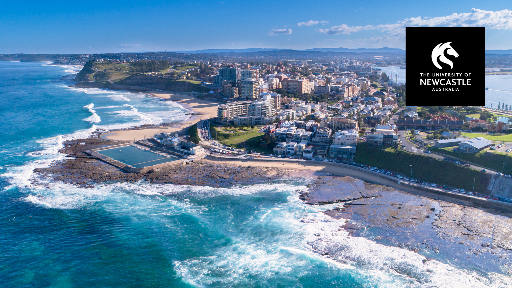
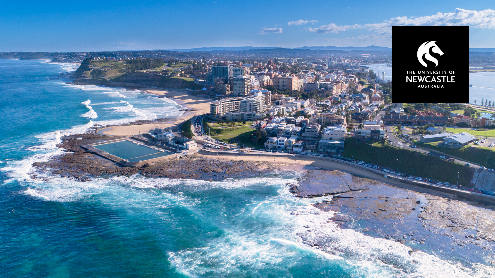

Welcome
I am a lecturer in the physics discipline at the University of Newcastle (Australia). Prior to this, I held positions as a post-doc, project scientist and tenured research scientist at the Max Planck Institute for Solar System Research in the department of Solar and Stellar Interiors. My research has two main focuses i) using helioseismology as a tool to understand sunspots and how solar active regions emerge onto the surface, and ii) exploring asteroseismic inversion techniques to infer the interior rotation on Sun-like stars.
In addition to scientific research, I teach undergraduate physics from first year through to Honours (specialising in electromagnetism and astrophysics), and I am an enthusiastic public outreach and science communicator.
I am fluent in English and have an elementary proficiency in German.
Research Interests
Solar Activity
Space weather is driven by the magnetic activity of the Sun. I am interested in the coupling of the evolution and dynamics of the magnetic field at the surface of the Sun to the subsurface layers, providing tighter boundary conditions for solar dynamo and solar flux emergence models. The solar dynamo is one of the last remaining great problems in solar physics. Despite the huge amounts of observational constraints, the solar dynamo problem remains unsolved. Looking to other Sun-like stars will help us place further constraints on the physical characteristics important for the solar dynamo. My publications in helio- and asteroseismology cover theory, data analysis, simulations and interpretation.
Magneto-helioseismology
To correctly infer the interior stellar properties it is necessary to understand the physics of the wave interactions with the magnetic field. My work made a fundamental impact by highlighting the shortcomings still plaguing local helioseismic techniques in the presence of strong surface magnetic fields, and by suggesting some solutions to overcome them: the need to understand the physics in order to correctly interpret the observations, and the need for improved non-linear inversion techniques. An extension of this, is to use asteroseismology to infer the magnetic properties of stars.
Stellar Rotation
In my endeavour to understand the Sun's magnetic field, I am also developing methods to improve asteroseismic inversions for the interior radial rotation of Sun-like stars. I look forward to continuing in this high-impact avenue of research, particularly in light of the inspiring prospects offered by ESA's Solar Orbiter and upcoming PLATO missions.
Invited Oral Presentations
I believe in giving clear, concise and easy to understand presentations. Here is a selection of the forums where I was invited to give a presentation of my scientific work.
- Invited speaker, "9th Australian Exoplanet Workshop", University of Sydney, 26 - 29 Sep 2023, Australia
- Keynote speaker, "Modeling, observing and understanding flows and magnetic fields in the Earth's core and in the Sun [DY2W03]", Isaac Newton Institute for Mathematical Sciences, 28 Nov - 2 Dec 2022, Cambridge, U.K. % one of four invited talks from 80 participants
- Keynote speaker, "20th Australian Space Research Conference", 26-28 Sept 2022, Sydney, Australia
- Invited speaker, "Solar and stellar dynamos: a new era", International Space Science Institute workshop, 13-17 June 2022, Bern, Switzerland
- "Future Directions in Solar Stellar and Planetary Astrophysics", NYUAD, 21-22 January 2020, Abu Dhabi, U.A.E.
- "SOHO-29: 22 years of GOLF and VIRGO: 2 sunspot cycles seen by seismology", 27-29 November 2018, Nice, France
- Invited colloquia, "Solving the Solar Dynamo Problem", Georgia State University, 4 March 2018, Atlanta, USA
- Invited colloquia, "Solving the Solar Dynamo Problem", University of Hawaii, 9 March 2017, Hawaii, USA
- Invited colloquia, "Solving the Solar Dynamo Problem", University of Birmingham, 28 April 2016, Birmingham, UK
- "Advances in the Seismology of the Sun and Stars", conference, 7-11 Dec 2015, Mumbai, India.
- IAU, FM17 "Advances in Stellar Physics from Asteroseismology", 3-15 August 2015, Honolulu, USA.
- "Sunspot formation: theory, simulations and observations", 9-13 March 2015, Stockholm, Sweden.
- NSO Workshop #27 "Fifty years of seismology of the Sun and Stars", May 7-10 2013, Tucson, USA.
- GONG 2012 / LWS / SDO5 / SOHO 27 "Eclipse on the Coral Sea: cycle 24 ascending", 12-16 November 2012, Palm Cove, Australia.
- Bcool, second workshop, "Cool magnetic stars", 15-19 October 2012, Göttingen, Germany.
- Opening Symposium CRC 963 "Astrophysical Flow Instabilities and Turbulence", 9-10 February 2012, Göttingen, Germany.
- LWS/SDO 3 "Solar Dynamics and Magnetism from the Interior to the Atmosphere", Oct 31 – Nov 4 2011, Stanford, USA.
- Fourth HELAS conference, "Seismological challenges for stellar structure", 1-5 February 2010, Lanzarote, Spain
- Third HELAS local helioseismology workshop "The Subsurface Structure of Sunspots", May 12-15 2009, Berlin, Germany.
- HELAS NA3 NA4 workshop, "The acoustic solar cycle", 6-8 January 2009, Birmingham University, U.K.
- International Space Science Institute workshop, "Origins and Dynamics of Solar Magnetism", 21-25 January 2008, Bern, Switzerland
- SOHO 19 / GONG2007 "Seismology of Magnetic Activity", July 9-13 2007, Monash University, Australia.
For a full list of presentations please download my CV
Publications
I publish papers in peer-reviewed journals. Most of my papers are first author. Below is a selection of my publications. A caret indicates a student. For a full list please refer to NASA-ADS.
- Alley^, C.A., Schunker, H., "Evolution of the magnetic field and flows of solar active regions with persistent magnetic bipoles before emergence", 2023, PASA, 10.1017/pasa.2023.52
- Weber, M.A., Schunker, H., Jouve, L., Işık, E., "Understanding Active Region Origins and Emergence on the Sun and Other Cool Stars", 2023, Space Sci. Rev., 219, 8
- Baumgartner^, C., Birch, A. C., Schunker, H., et al., "Impact of spatially correlated fluctuations in sunspots on metrics related to magnetic twist", 2022, A&A, 664, A183
- Gottschling^, N., Schunker, H. et al. "Testing solar surface flux transport models in the first days after active region emergence", 2022, A&A, 660, A6
- Gottschling^, N., Schunker, H., et al. "Evolution of solar surface inflows around emerging active regions", 2021, Sol. Phys., 652, A148
- Dhuri, D., Hanasoge, S.M., Birch, A.C., Schunker, H. “Application and interpretation of deep learning for identifying pre-emergence magnetic field patterns”, 2020, Astrophys. J., 903, 18
- Schunker, H., et al. "Average motion of emerging solar active region polarities. II. Joy's Law", 2020, A&A, 640, A116
- Schunker, H., et al. "Fragile Detection of Solar g-modes by Fossat et. al", 2018, Sol. Phys., 293
- Birch, A.C., Schunker, H., Braun, D.C., et al. "A low upper limit on the subsurface rise speed of solar active regions", 2016, Science Advances, 2, 7
- Schunker, H., Braun, D.C., Birch, A.C., Burston, R., Gizon, L. "SDO/HMI survey of emerging active regions for helioseismology", 2016, A&A, 595, A107
- Schunker, H., Schou, J., Ball, W. H., Nielsen^, M. B., Gizon, L. "Asteroseismic inversions for radial differential rotation of Sun-like stars: ensemble fits", 2016, A&A, 586, 79
- Nielsen^, M. B., Schunker, H., Gizon, L., Ball, W. H. "Constraining differential rotation of Sun-like stars from asteroseismic and starspot rotation periods", 2015, A&A, 582, A10
- Nielsen^, M.B., Gizon, L.,Schunker, H., Karoff, C. "Rotation periods of 12 000 mainsequence Kepler stars: Dependence on stellar spectral type and comparisons with v sin i observations", 2014, A&A, 557, L10
- Schunker, H., Gizon, L., Cameron, R.H., Birch, A.C. " Helioseismology of sunspots: how sensitive are travel times to the Wilson depression and subsurface magnetic field?", 2013, A&A, 558, A130
- Schunker, H. and Braun, D.C. "Newly identified properties of solar acoustic power", 2010, Sol. Phys., 268, 349
- Schunker, H. "Invited review: Local helioseismology and the active Sun", 2010, Astron. Nachrichten, 331, 901
- Cameron, R.H., Gizon, L., Schunker, H. and Pietarila-Graham, A. "Constructing semiempirical sunspot models for helioseismology", 2010, Sol. Phys., 268, 293
- Gizon, L., Schunker, H., et al. "Helioseismology of Sunspots: A Case Study of NOAA Region 9787", 2009, Space Science Reviews, 144, 249
- Schunker, H., and Cally, P.S. "Magnetoacoustic Ray Propagation and Conversion in Solar Active Regions", 2006, MNRAS, 372, 551
- Schunker, H., Braun, D.C., Cally, P.S., and Lindsey, C., "Inclined Magnetic Fields and the Showerglass Effect", 2005, Astrophysical Journal, 621, L149
Outreach
Astronomy is a gateway science for many: the Sun and the night sky is visible to everyone and I enjoy sharing the physics of what we know about them. The enthusiasm of primary school students is energising, and engaging with adults of diverse backgrounds provides me with a new perspective on how my work fits into the world. I give public talks, have featured in television, given radio interviews and contributed to written articles. In the past, I was responsible for Education and Public Outreach for the Solar and Stellar Interiors department at the MPS. I contributed to all press releases, gave guided tours of the institute, public lectures and organised public events, such as the night of science.
- ABC Catalyst Solar storms: a warning from space, 2022
- ABC Science Nuclear Fusion explained in an elevator ride, 2022
- The Conversation Curious Kids: why do we see the ‘sky’ during the day, but the galaxy at night?, 2021
- The Conversation Curious Kids: why is the Sun’s atmosphere hotter than its surface?, 2021
- Press release, Distant star is roundest object ever observed in nature, 2016
- Press release, Giant hurricanes on the Sun, 2014
- Press release,Stellar inventory: Searching for other Earths, 2014
- Press release, Interior rotation of a distant star revealed, 2013
- Press release, Unexpectedly slow motions below the Sun's surface, 2012
- 2019 Design and implementation of 'Sounds of the Stars' interactive exhibit, general coordination, interactive exo-planet detection exhibit Vierte Nacht des Wissens, Göttingen, Germany
- 2017 Design and implementation of 'Sounds of the Stars' interactive exhibit, Dritte Nacht des Wissens, Göttingen, Germany
- 2015 Design and implementation of 'Sounds of the Stars' interactive exhibit, Zweite Nacht des Wissens, Göttingen, Germany
- 2012 Public talk "The Sounds of the Stars", Erste Nacht des Wissens, Göttingen, Germany
- Helioseismology observation movies from HMI
Teaching
I teach into the following undergraduate courses:
- PHYS1220 Advanced Physics II - Physics underpins most aspects of modern engineering, technology, and medicine. For example, about 25% of the world's economy is tied to the quantum mechanics of silicon, and many of the most important practical advances in chemistry and biology can be traced to the precise understanding of the behaviour of atoms and molecules provided by quantum mechanics. Knowledge of physics is therefore vital to understanding the world around us. This calculus-based course continues on from PHYS1210 and covers the topics of mathematical tools, electromagnetism, optics and physics of matter.
- PHYS2100 Introduction to Astronomy - Astronomy is vital and exciting because it extends the frontiers of knowledge. As a science, astronomy has two important roles. It provides us with a clearer picture of our place in the universe, and it stimulates the development of new technology, much of which ultimately finds practical application. This course covers both aspects. Topics covered include astronomical coordinates and measurement, instrumental techniques, the solar system, the structure and life cycle of the sun and other stars, clusters, quasars, pulsars, and cosmology.
- PHYS2112 Classical Physics - Waves and oscillating systems are fundamental to an understanding of the physical world. Through these concepts we can understand diverse phenomena, from pendulums, musical instruments, and mechanical structures, through tides, plasma waves in space, to the nature of light. Technological applications of these ideas are at the heart of all optical and electrical devices. At its core Classical Physics 2 studies the motion of particles, fields and energy using the concepts of Wave Mechanics. This course requires an intermediate level of calculus for treatment of waves and oscillators, electromagnetism and optics. Blended problem-based conceptual learning (lectorials) will be used to gain an understanding of key developments, ideas and theories covered in Classical Physics 2. Blended problem-based, hands-on learning (laboratory workshops) will be used to gain an understanding of key experiments, models and analysis covered in Classical Physics 2. At the end of this course students will have a deeper understanding of concepts in mechanics, optics and electromagnetism, and be able to solve time-dependent problems in these areas.
- PHYS3112 Photonics - Photonics deals with the applied concepts and constructs of electromagnetism across the boundaries of science and engineering. The time dynamics of electromagnetic fields, as solutions to Maxwell’s equations, underpin all of optics, communication signal and power propagation in transmission lines, waveguides and antennas. Specific instances of photon-induced amplification forming laser systems are of central focus in this holistic and balanced course. Lectorials and blended delivery of knowledge together with engaging laboratory and computational experiments will elucidate electromagnetism and laser technologies to allow advanced understanding of EM applications as learning outcomes.
- GEOS1050 Natural Hazards - This course covers Earth’s natural processes and how these lead to natural hazards that impact society. Starting from geological, environmental, oceanic/hydrological, and climatological systems, this course explores why, when, and how hazards occur and turn into disasters. The course covers the fundamental science behind natural hazards and considers case studies and examples from Australia and around the world. This includes how human activities affect Earth’s processes, including climate change, and their relationship with natural hazards. You will learn about the important role of science in providing knowledge that can reduce the current and future risks associated with natural hazards and underpins sustainable human development. The topics covered provide the necessary grounding for continuing studies in Earth, Environmental, Climate, Coastal, Marine, and Spatial Sciences.
Research students
I work with students at different levels on research projects. If you are interested in working with me, please get in touch.
PhD students
- Asha Lakshmi K.V. (current) University of Newcastle
- Chloe Wilkins (current) University of Newcastle
- William Roland-Batty (current) University of Newcastle
- Geoffrey Skinner (current) University of Newcastle
- Dr. Christian Baumgartner (2022) MPS/University of Göttingen
- Dr. Nils Gottschling (2021) MPS/University of Göttingen
- Dr. Martin Bo Nielsen (2017) MPS/University of Göttingen, awarded the Berliner-Ungewitter Prize for the best thesis of the year at the University of Göttingen
Honours students
- Jacob Crawford (current)
- Camron Alley (2022), Constraining Asteroseismic Inversions for the Interior Rotation of Stars (School Medal, College Medal)
- Declan Keir (2023), Pix2Pix Pipeline for Predicting Active Region Evolution
- Jacob Andronicus (2021), SolMap
Summer students
- Liam Barnes (AMSI Scholarship, 2023)
- Aditya Joshi (2021)
- Camron Alley (2020)
- Megan Ferguson (2020)
Resources
Here are some useful resources for students to get started.
Observations
Data
- FITS files
- AstroPy: How to read FITS files in Python
- SAOImageDS9, visualise FITS arrays
Literature
- NASA/ADS for literature searches
- arXiv astro-phpre-print repository
- Lecture Notes on Stellar Oscillations (Christensen-Dalsgaard)
- Local Helioseismology,
Writing
- Overleaf to create and share research documents.
- How to Write A Clear and Engaging Paper for all Astronomers (Leslie Sage)
- Publish like a pro (Nature)
- Good and Bad Scientific Practice Slides (Peter Sigmund)
Community
- SolarNews Newsletter of the Solar Physics Division of the AAS
- Astronomical Society of Australia
- International Astronomical Union
- COSPAR (Committee on Space Research)
Contact
Hannah Schunker
The University of Newcastle, School of Information and Physical Sciences University Drive, 2308 NSW, Australia
Email: hannah.schunker [ @ ] newcastle.edu.auTel: +61 (02) 4055 4384